KØMNATA Russia
The half of the room that sings along.
Open on SpotifyLive today. Plan tomorrow. Party tonight.
Buy tickets
Friday 25 September, doors 23:59, Frecuencia.
No photographer tonight. Five or six disposable cameras go round the bar, shooting everything: flash in your face, blur, grain, someone's back. The whole roll gets developed, nothing edited out.
KØMNATA used to be photographed for you. Now you are the one shooting it.
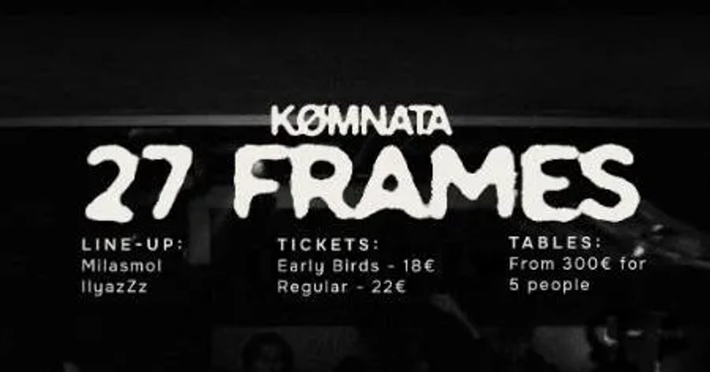
Six editions, one room at a time.
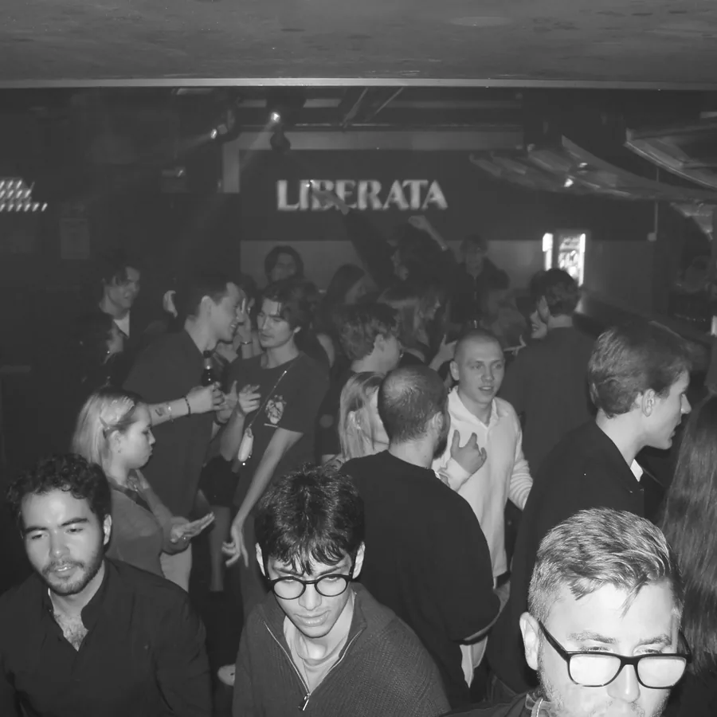
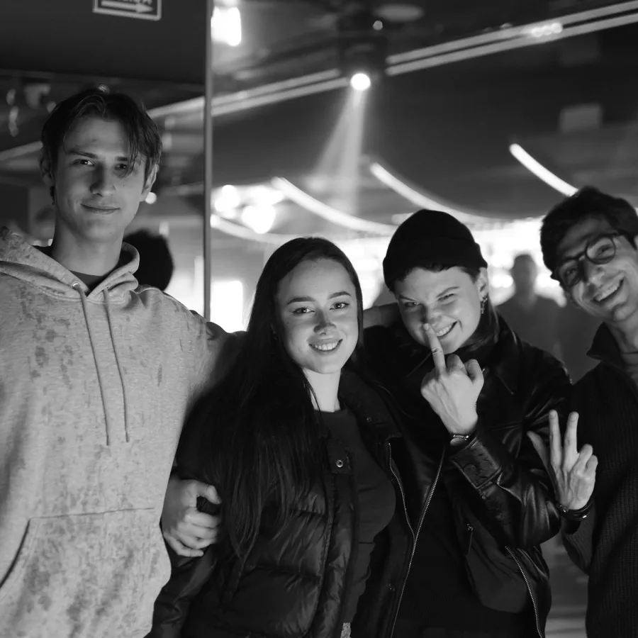
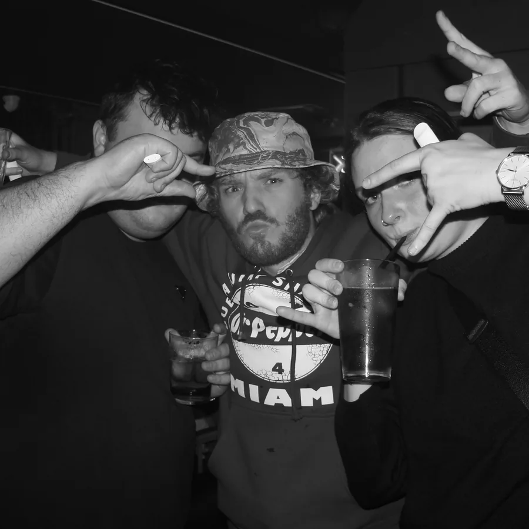
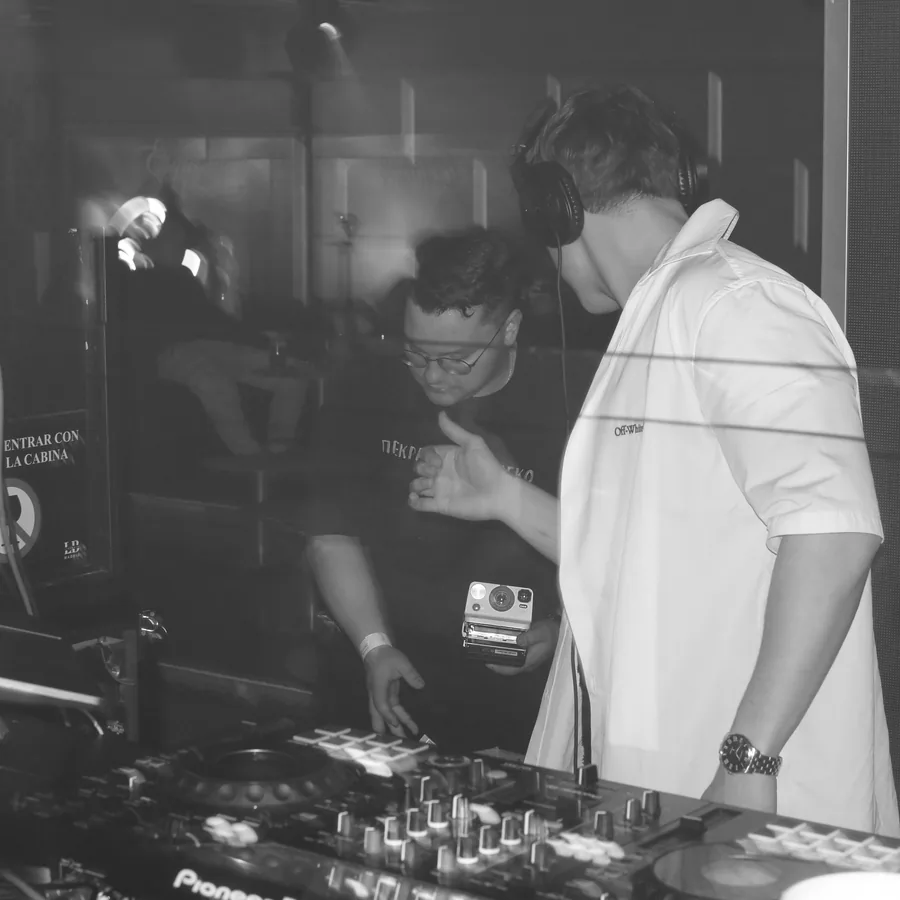
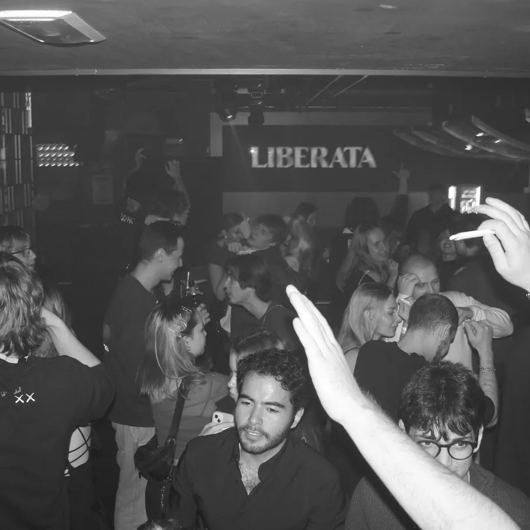
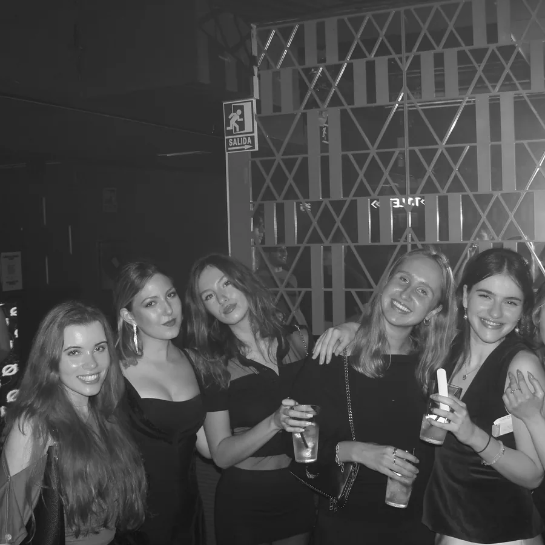
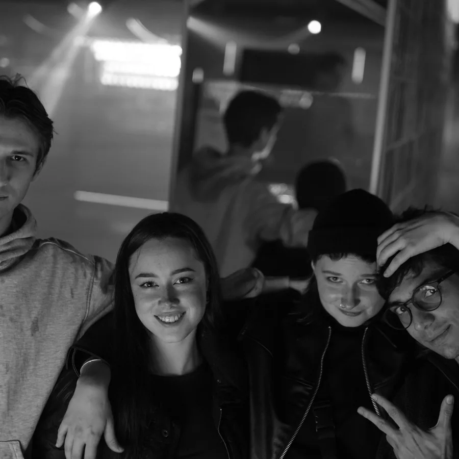
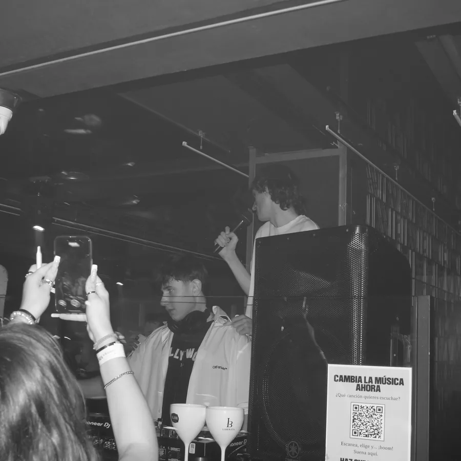
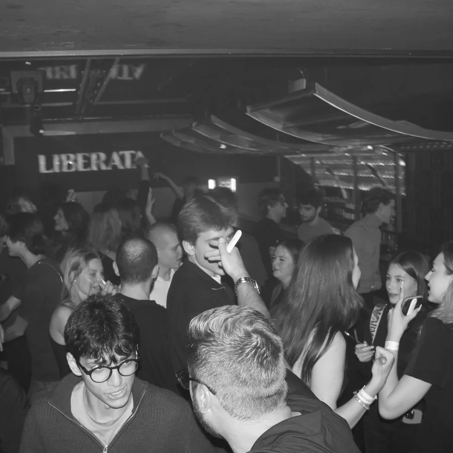
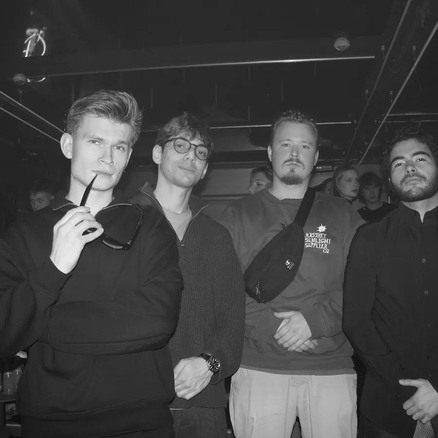
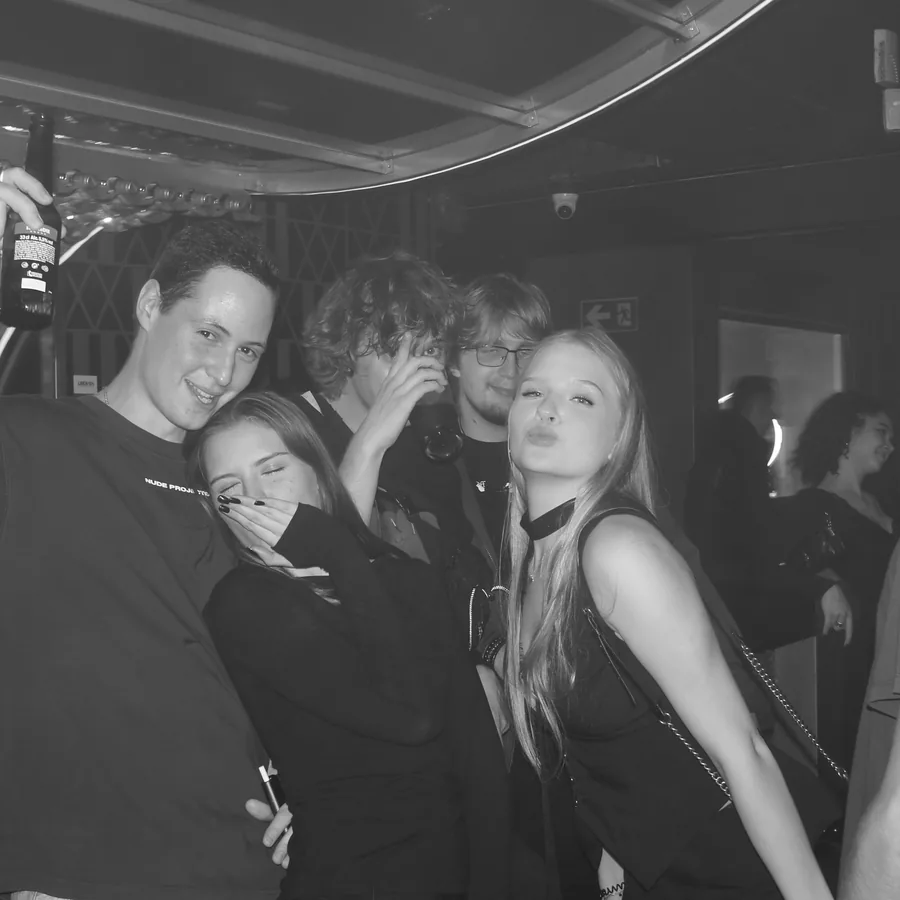
Three records. Play them before you come and you already know the night.
The half of the room that sings along.
Open on SpotifyWhat the whole floor already knows.
Open on SpotifyFive in the morning, still going.
Open on SpotifyCalle de Lagasca 103
Salamanca, 28006 Madrid
Bookings and partnerships business.komnatamadrid@gmail.com
Dates, table drops and guest list open on Telegram before anywhere else.
Telegram
@itskomnataa. Dates, drops and access land here first.
Instagram
@itskomnata. The room, the crowd, the recaps.
Open the profile